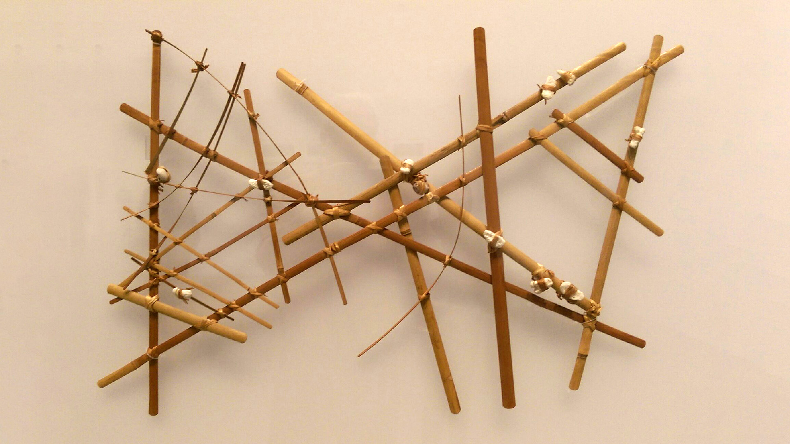

Bu Bölümde Neler Öğreneceksiniz?
Bu bölümde vektörleri öğreneceksiniz - hareket, kuvvet ve fizik simülasyonlarının temel yapı taşı. Vektörler olmadan gerçekçi animasyonlar oluşturmak neredeyse imkansız!
🤔 Vektör Nedir?
Vektör, hem büyüklüğü hem de yönü olan bir niceliktir.
- Skaler: Sadece büyüklük. Örnek: "50 km/s hızla gidiyorum"
- Vektör: Büyüklük + Yön. Örnek: "Kuzeye doğru 50 km/s hızla gidiyorum"
Vektörler genellikle ok olarak çizilir: okun uzunluğu büyüklüğü, yönü ise... yönü gösterir!
Vektör Nedir?
Vektör kavramı, skaler vs vektör, günlük hayat örnekleri
What is a Vector? Başlangıçp5.Vector Sınıfı
createVector(), x/y özellikleri, temel kullanım
The p5.Vector Class BaşlangıçVektör Toplama
add() metodu, hız + konum, hareket temelleri
Vector Addition BaşlangıçVektör Çarpma ve Bölme
mult(), div(), hız kontrolü, ölçekleme
Vector Multiplication OrtaVektör Büyüklüğü
mag(), normalize(), birim vektörler
Vector Magnitude OrtaHareket Simülasyonu
Konum, hız, ivme - hepsini bir araya getirme
Motion Simulation İleri